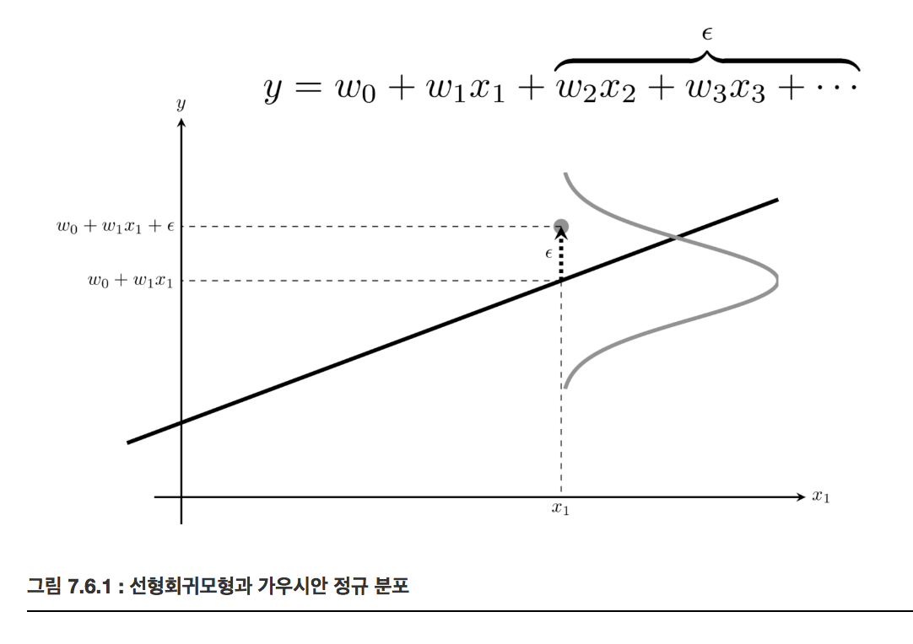

Normal distribution(정규 분포)
Summary
- 중심극한정리는 분산이 유한한 모집단에서 샘플링된 표본 데이터는 표본 데이터의 크기가 커질수록 정규분포의 형태를 띄어간다는 것 즉, n이 무한한 값으로 커져갈수록 정규분포에 가까워진다는 것이다. N개의 임의의 분포로부터 얻은 표본의 평균을 정규화하면 N이 증가할 수록 표준 정규 분포로 수렴한다.
- Q-Q(Quantile-Quantile)플롯은 분석하고자 하는 표본 데이터의 분포와 정규 분포의 분포 형태를 비교하여 표본 데이터가 정규 분포를 따르는지 검사하는 간단한 시각적 도구이다. 동일 분위수에 해당하는 정상 분포의 값과 주어진 데이터 값을 한 쌍으로 만들어 그린 스캐터(scatter plot) 이다.
가우시안 정규 분포(Gaussian normal distribution), 정규분포(normal distribution)
자연 현상에서 나타나는 숫자를 확률 모형으로 모형화 할 때 많이 사용된다. 평균 와 분산 라는 두 개의 모수만으로 정의된다.
확률밀도함수(pdf:probability density function)
분산의 역수를 정밀도(precision) 라고 부르기도 한다.
표준 정규 분포(standard normal distributio)는 정규 분포 중에서도 평균이 0 이고 분산이 1인() 정규 분포이다.
정규 분포의 확률밀도함수 성질
- 일 때 확률밀도가 최대가 된다.
- 로 다가가거나 로 다가갈수록 확률밀도가 작아진다.
SciPy를 사용한 정규 분포의 시뮬레이션
Scipy의 stats 서브 패키지에 있는 norm 클래스가 정규 분포 클래스이다. loc 인수로 기댓값 를 설정하고 scale 인수로 표준편차 를 설정한다.
mu = 0
std = 1
rv = sp.stats.norm(mu, std)
pdf 메서드를 사용하면 확률밀도함수를 계산할 수 있다.
xx = np.linspace(-5, 5, 100)
plt.plot(xx, rv.pdf(xx))
plt.ylabel("p(x)")
plt.title("정규 분포의 확률 밀도 함수(pdf)")
plt.show()
시뮬레이션을 통해 표본을 얻으려면 rvs 메서드를 사용한다.
x = rv.rvs(20)
sns.distplot(x, kde=True, fit=sp.stats.norm)
plt.title("랜덤 표본 생성 결과")
plt.xlabel("표본값")
plt.ylabel("{% math %}p(x){% endmath %}")
plt.show()
로그정규분포(log-normal distribution)
데이터에 로그를 한 값 또는 변화율이 정규분포가 되는 분포이다. 항상 양수이다
Quantile-Quantile plot (Q-Q 플롯)
정규 분포 검정(normality test)는 어떤 확률변수의 분포가 정규 분포인지 아닌지 확인하는 가장 중요한 통계적 분석이다.
Q-Q(Quantile-Quantile)플롯은 분석하고자 하는 표본 데이터의 분포와 정규 분포의 분포 형태를 비교하여 표본 데이터가 정규 분포를 따르는지 검사하는 간단한 시각적 도구이다. 동일 분위수에 해당하는 정상 분포의 값과 주어진 데이터 값을 한 쌍으로 만들어 그린 스캐터(scatter plot) 이다.
Q-Q 플롯을 그리는 방법
- 표본 데이터를 정렬(sort)한다
x_sorted = np.sort(x)
x_sorted
- 하나하나의 표본 데이터가 전체 데이터 중의 몇 % 정도에 해당하는지 위치 값을 구한다. SciPy에서는 특정 순위의 값이 나타날 가능성이 높은 값을 뜻하는 순서 통계량(order statistics)이라는 값을 이용한다.
from scipy.stats.morestats import _calc_uniform_order_statistic_medians
position = _calc_uniform_order_statistic_medians(len(x))
position
- 각 표본 데이터의 위치 값이 정규 분포의 누적확률함수(cdf) 값이 되는 표준 정규 분포의 표본값을 구한다. 즉 확률값에 대한 누적확률함수의 역함수 값을 구한다. 이를 표본 정규 분포의 분위함수(quantile function)값이라고 한다. 예를 들어 표본 정규 분포의 1%의 분위함수값은 , 약 -2.326이다.
qf = rv.ppf(position)
qf
표본 데이터와 그에 대응하는 분위수를 하나의 쌍으로 간주하여 2차원 공간에 하나의 점(point)으로 그린다.
모든 표본에 대해 2부터 4까지의 과정을 반복하여 스캐터 플롯을 완성한다.
plt.scatter(qf, x_sorted)
plt.title("QQ plot")
plt.xlabel("Theoretical quantiles")
plt.ylabel("Ordered values")
plt.axis("equal")
plt.show()
SciPy 패키지의 stats 서브 패키지는 Q-Q 플롯을 계산하고 그리기 위한
probplot명령을 제공한다.probplot은 기본적으로 인수로 보낸 데이터 표본에 대한 Q-Q 정보만을 반환하고 챠트는 그리지 않는다. 만약 차트를 그리고 싶다면plot인수에 matplotlib.pylab 모듈 객체 혹은Axes클래스 객체를 넘겨주어야 한다.
np.random.seed(0) plt.figure(figsize=(7, 7)) sp.stats.probplot(x, plot=plt) plt.axis("equal") plt.show()
정규 분포를 따르지 않는 데이터 표본을 Q-Q 플롯으로 그리면 직선이 아닌 휘어진 형태로 나타난다.
중심 극한 정리
중심 극한 정리(Central Limit Theorem)는 실세계에서 발행하는 현상 중 많은 것들이 정규 분포로 모형화 가능한 이유이다. 여러 확률 변수의 합이 정규 분포와 비슷한 분포를 이루는 현상이다.
개의 임의의 분포로부터 얻은 표본의 평균은 이 증가할 수록 기댓값이 , 분산이 인 정규 분포로 수렴한다.
N개의 임의의 분포로부터 얻은 표본의 평균을 정규화하면 N이 증가할 수록 표준 정규 분포로 수렴한다.
중심극한정리의 맹점은 중심극한정리를 맹신하여 모든 상황이 정규분포에 수렴한다는 가정을 하는 것. 모집단의 데이터가 충분하지 않거나 특수한 도메인의 경우에는 정규분포에 수렴하지 않을 수 있다.
큰 수의 법칙이란 어떤 확률을 가진 시행을 큰 수로 반복했을 때, 그 사건의 결과는 평균의 값으로 수렴하게 된다는 것. 예를 들어 앞면 뒷면을 가진 동전을 여러번 던졌을때, 그 비율은 1:1로 수렴하게 되는것이다.
Universal Approximation Theorem은 Deep Learning에서의 중심극한정리라고 말할 수 있는 개념이다. 존재할 수 있는 모든 함수 f(x)는 인공신경망으로 반드시 수렴시킬 수 있다는 간단한 이론이다. 딥 러닝을 연구하는 여러 유명인사들이 자주 강조하는 개념이다.
정규 분포의 통계량 분포
N개의 가우시안 정규 분포로부터 얻은 표본의 합은 N과 상관없이 기댓값이 , 분산이 인 정규 분포다.
가우시안 정규 분포의 표본에 상수를 빼거나 곱해도 가우시안 정규 분포이다. 이 경우에도 위와 같이 기댓값이 0, 표준편차가 1이 되도록 정규화를 하면 다음과 같이 쓸 수 있다.
가우시안 정규 분포 표본의 평균을 정규화한 통계량을 통계량이라고 한다. 중심 극한 정리와 다른 점에 주의해야 한다. 중심 극한 정리에서는 표준 정규 분포로 점점 다가갈 뿐이고 표본의 갯수가 무한대가 되기 전에는 정확한 정규 분포가 아니지만 z 통계량은 갯수 N에 상관없이 항상 정확하게 표준 정규 분포이다.
선형회귀모형과 정규분포
정규 분포는 선형회귀모형에서 잡음(disturbance)을 모형화하는데 사용된다.
은 잡음(disturbance)이라고 하며 우리가 값을 측정할 수 없는 입력변수 이다. 잡음 𝜖이 기댓값이 0인 가우시안 정규분포라고 가정하는 것은 합리적이다.
